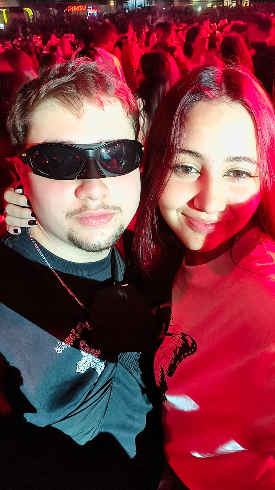
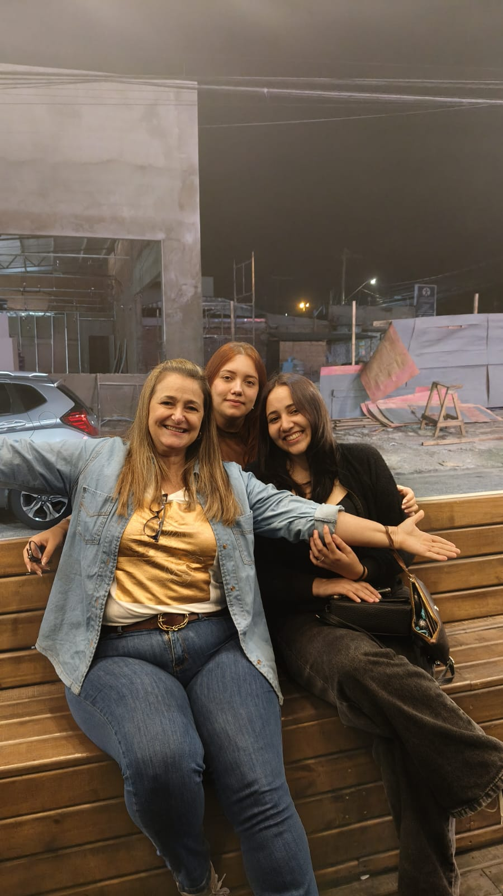
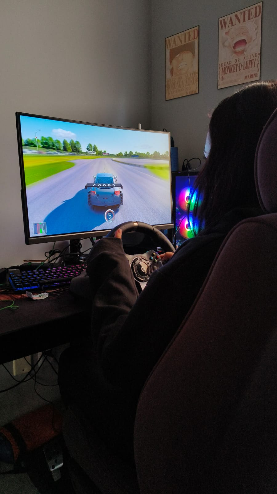
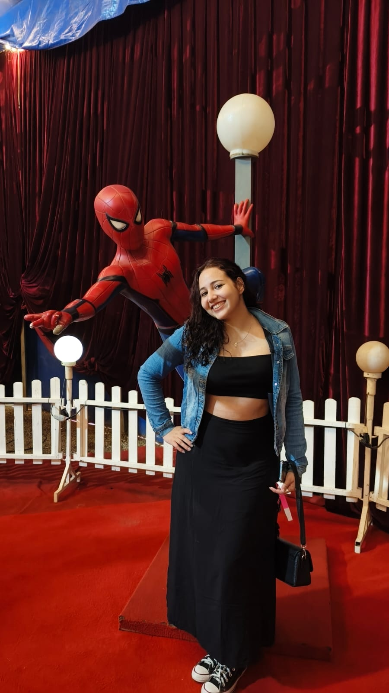
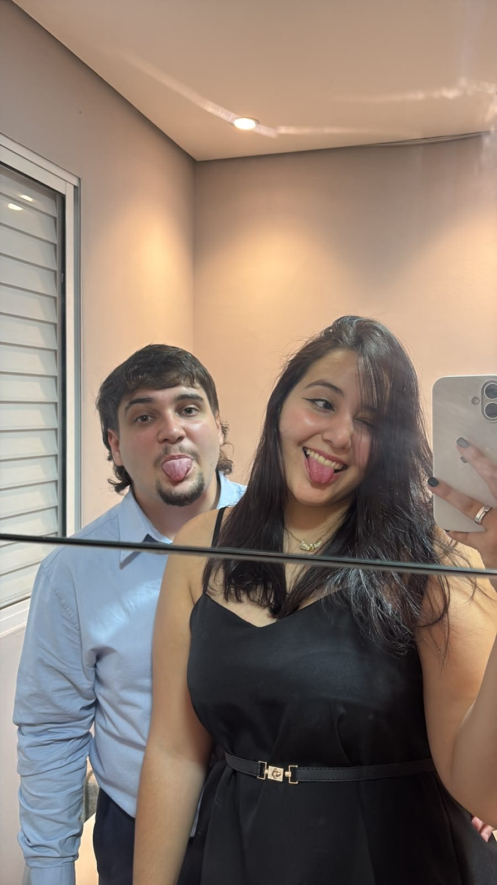

Como a Tudo Começou
O Primeiro "Encontro"
Marcamos de ser ver no Shopping Ciane para você comprar sua roupa para o Submundo, infelizmente não tenho foto do dia.

Submundo808
Tivemos nosso primeiro show juntos e tecnicamente o primeiro encontro.
Vários encontos no PDS
Alguns dias tiveram um clima bom outros nem tanto, dia tranquilo e muito gostoso.

Conhecendo meu Pai e a Cris
Fomos ao BigJeff's perto de casa, onde você estava muito nervosa e timida pois foi conhecer minha familia.
Em casa, testando as habilidades para a CNH
Você foi em casa e ficamos o dia todo de boa, assistindo, dando risada e conversando, você até tentou dirigir kkkkkk.

Fomos no Circo!
Neste dia fomos no Circo onde demos muita risada e que tinha um Churros muito caro, de 30 pila.

Escutei o SIM tão esperado!
Na semana desse dia fiz tudo correndo para que desse certo e querendo escutar o seu SIM o quanto antes.
Presente inesperado!
Fiz uma surpresa para você de comemoração de 1 mês, um dia em que você chorou pela surpresa simples.

Feliz 8 Meses!
Temos vários momentos juntos e todos eles eu adorei!
Céu de Momentos
Achou que seria só isso? Ainda tem mais um pouquinho das nossas mais de 300 fotos até o momento!
.jpeg)
.jpeg)
.jpeg)
.jpeg)
.jpeg)
.jpeg)
.jpeg)
.jpeg)
.jpeg)
.jpeg)
.jpeg)
.jpeg)
.jpeg)
.jpeg)
.jpeg)